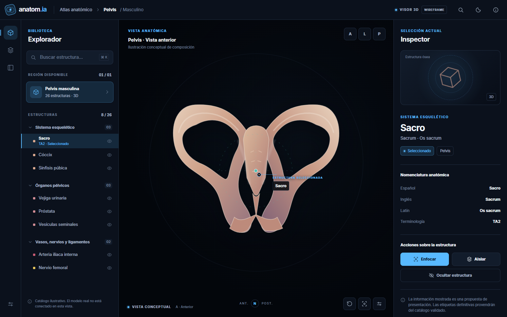
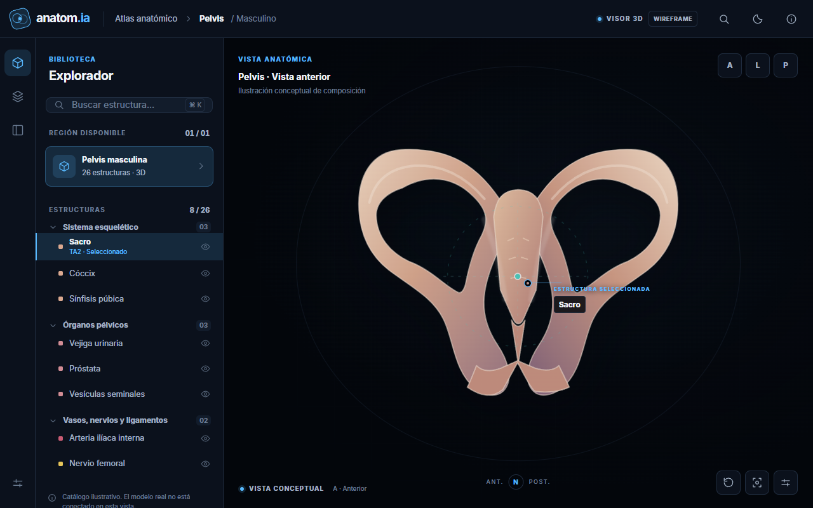
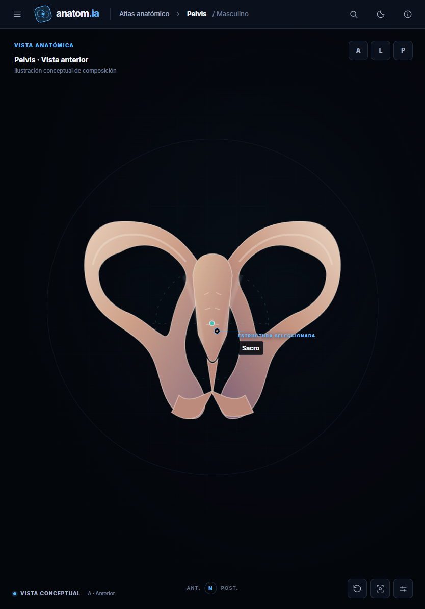
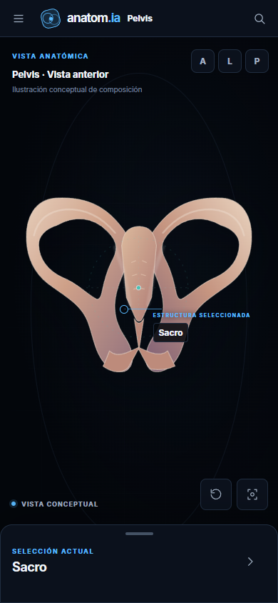
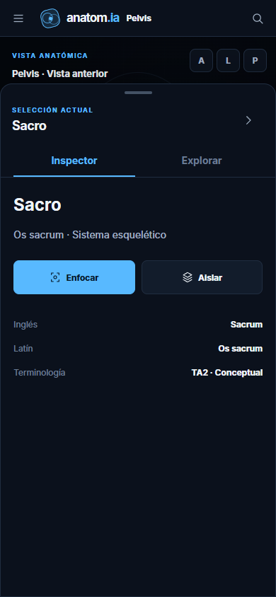
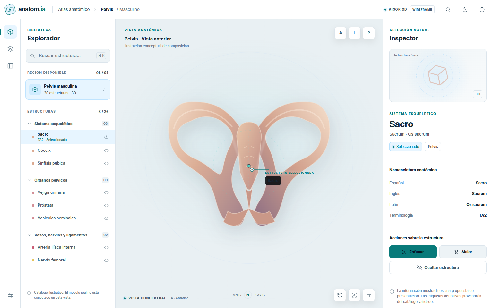
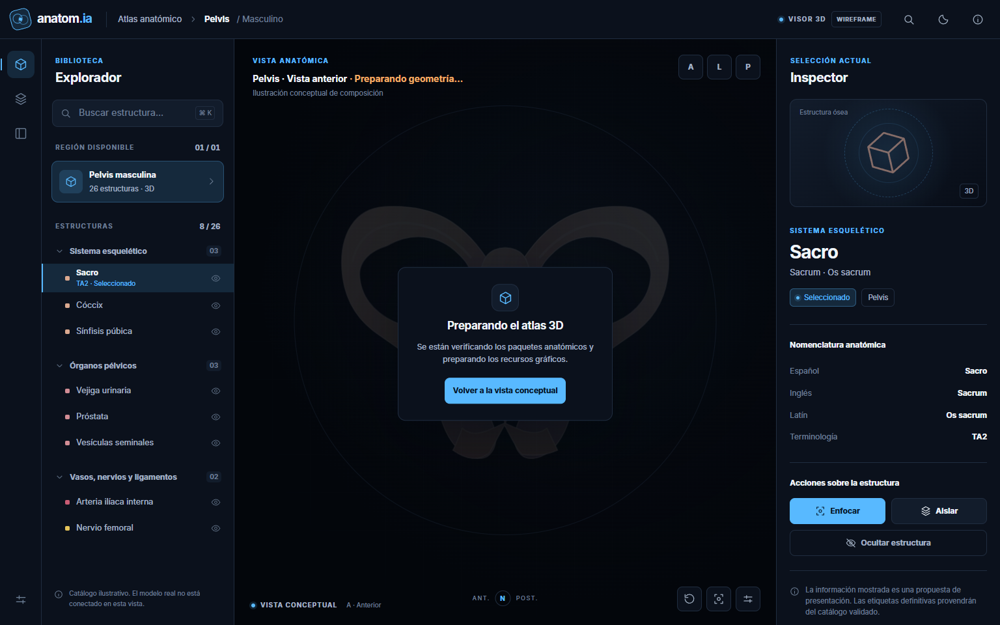
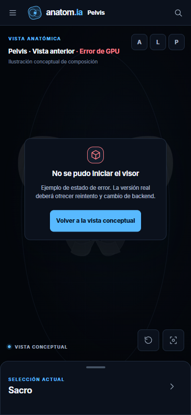
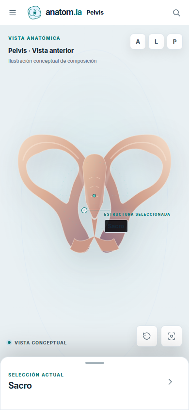

01 · Área de trabajo
Escritorio profesional1536 × 960 · 3 paneles

MacBook y laptop1280 × 800 · Inspector bajo demanda

02 · Dispositivos táctiles
iPad vertical834 × 1194

iPhone vertical390 × 844

iPhone · sheet expandido390 × 844

03 · Estados y temas
Modo claro · escritorio1536 × 960

Cargando · escritorio1536 × 960

Error · iPhone390 × 844

Modo claro · iPhone390 × 844

Las capturas validan únicamente la composición CSS en Chrome headless Windows. Safe areas reales, teclado virtual, Safari/iOS/iPadOS, Stage Manager, Apple Pencil y Android nativo requieren pruebas en dispositivos reales antes de la aprobación final de M05.